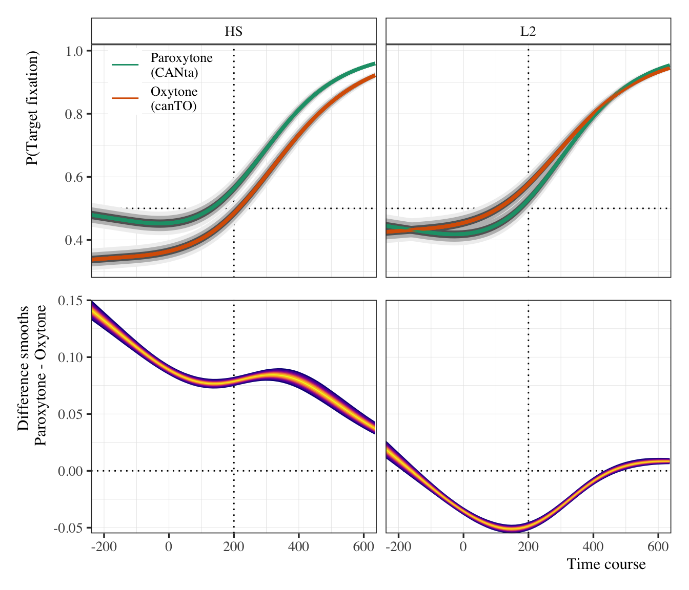
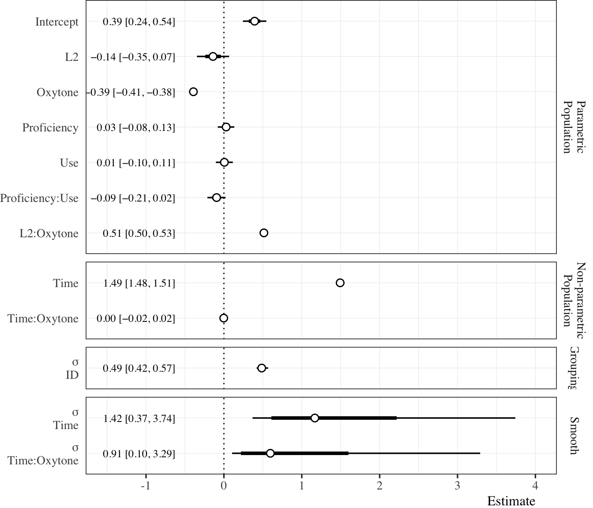

Code
# Load libraries and helpers
source(here::here("scripts", "00_libraries.R"))
source(here::here("scripts", "01_helpers.R"))
source(here::here("scripts", "04_load_data.R"))GAMMs
Load everything we need for the analyses.
# Load libraries and helpers
source(here::here("scripts", "00_libraries.R"))
source(here::here("scripts", "01_helpers.R"))
source(here::here("scripts", "04_load_data.R"))First, we’ll fit a model to the data of one participant to check and make sure everything is working ok.
# Take subset of 1 participant
mon01 <- stress_50 %>%
filter(id == "mon01",
time_zero > -10, time_zero < 20)
# Set model formula
formula <- bf(
target_count | trials(50) ~ 1 + stress +
s(time_zero, bs = "cr", k = 3) +
s(time_zero, by = stress, bs = "cr", k = 3)
)
# Get priors
get_prior(
formula = formula,
family = binomial(link = "logit"),
data = mon01
) %>%
as_tibble() %>%
select(prior, class, coef) %>%
knitr::kable(format = "pandoc")| prior | class | coef |
|---|---|---|
| b | ||
| b | stime_zero_1 | |
| b | stime_zero:stressOxytone_1 | |
| b | stime_zero:stressParoxytone_1 | |
| b | stressParoxytone | |
| student_t(3, 0, 2.5) | Intercept | |
| student_t(3, 0, 2.5) | sds | |
| sds | s(time_zero, bs = “cr”, k = 3) | |
| sds | s(time_zero, by = stress, bs = “cr”, k = 3) |
# Set priors
log_spline_priors <- c(
prior(normal(0, 3), class = Intercept),
prior(normal(0, 10), class = b),
prior(student_t(3, 0, 1), class = sds)
)
# Fit test mod
test_mod <- brm(
formula = formula,
family = binomial(link = "logit"),
prior = log_spline_priors,
iter = 2000, warmup = 1000, cores = 4,
backend = "cmdstanr",
control = list(adapt_delta = 0.99, max_treedepth = 15),
data = mon01,
file = here("models", "gamms", "test_mod")
)We can use the posterior to take a look at the model fit.
# Plot time course
test_mod %>%
emmeans(spec = ~ 1 + time_zero + stress,
at = list(time_zero = seq(-5.5, 11.5, 1)),
epred = T) %>%
gather_emmeans_draws() %>%
ggplot(., aes(x = time_zero, y = .value / 50, color = stress)) +
geom_hline(yintercept = 0.5, lty = 3) +
stat_lineribbon(size = 0.5) +
scale_color_brewer(name = NULL, palette = "Dark2",
labels = c("Paroxytone\n(CANta)", "Oxytone\n(canTO)")) +
scale_fill_brewer(name = NULL, palette = "Greys",
labels = c("95%", "80%", "50%")) +
labs(y = "P(Target fixation)", x = "Time course") +
coord_cartesian(xlim = c(-5.4, 11.4), ylim = c(-0.01, 1.02),
expand = F) +
clean_guide(position = c(0.8, 0.22),
title = "Estimated prediction intervals")# Test at time 0
test_mod %>%
emmeans(
spec = ~ 1 + time_zero + stress,
at = list(time_zero = 0),
epred = TRUE
) %>%
gather_emmeans_draws() %>%
mutate(prop = .value / 50) %>%
ggplot(., aes(x = prop, y = stress)) +
geom_rect(data = tibble(xmin = 0.49, xmax = 0.51),
inherit.aes = F, fill = "lightblue", color = "white", alpha = 0.2,
aes(xmin = xmin, xmax = xmax, ymin = -Inf, ymax = Inf)) +
geom_vline(xintercept = 0.5, lty = 3, size = 0.5) +
stat_dotsinterval(quantiles = 100) +
geom_text(aes(label = label), hjust = 0,
data = tibble(stress = 0.5, prop = 0.51,
label = "200ms after 1st syllable offset")) +
labs(y = NULL, x = "P(Target fixation)") +
coord_cartesian(xlim = c(0.48, 0.68))
Now we set up the data set for the main model. Main concerns are (1) getting the factors ready for smoothing terms and (2) subsetting the time course to reduce computational load.
# Set model formula
formula_log_gamm_stress <- bf(
target_count | trials(50) ~ 1 + group * stress +
s(time_zero, bs = "cr") +
s(time_zero, by = stress, bs = "cr") +
#s(time_zero, id, bs = "fs", m = 1, k = 3) +
#s(time_zero, target, bs = "fs", m = 1, k = 3)
(1 | id)
)
# Take a look at the default priors
get_prior(
formula = formula_log_gamm_stress,
family = binomial(link = "logit"),
data = stress_50_gamm
) %>%
as_tibble() %>%
select(prior, class, coef) %>%
knitr::kable(format = "pandoc")| prior | class | coef |
|---|---|---|
| b | ||
| b | groupHL | |
| b | groupHL:stressOxytone | |
| b | groupL2 | |
| b | groupL2:stressOxytone | |
| b | stime_zero_1 | |
| b | stime_zero:stressOxytone_1 | |
| b | stressOxytone | |
| student_t(3, 0, 2.5) | Intercept | |
| student_t(3, 0, 2.5) | sd | |
| sd | ||
| sd | Intercept | |
| student_t(3, 0, 2.5) | sds | |
| sds | s(time_zero, bs = “cr”) | |
| sds | s(time_zero, by = stress, bs = “cr”) |
# Set priors
stress_log_gamm_priors <- c(
prior(normal(0, 3), class = Intercept),
prior(normal(0, 3), class = b),
prior(student_t(3, 0, 5.9), class = sds),
prior(cauchy(0, 2), class = sd)
)
# Fit model
gamm_log_group_stress <- brm(
formula = formula_log_gamm_stress,
family = binomial(link = "logit"),
prior = stress_log_gamm_priors,
iter = 11000, warmup = 1000, cores = 4, threads = threading(2), thin = 10,
backend = "cmdstanr",
control = list(adapt_delta = 0.9999, max_treedepth = 15),
data = stress_50_gamm,
file = here("models", "gamms", "gamm_log_group_stress")
)Now we will fit a separate model to the bilingual groups’ data. This model includes standardized proficiency and use scores.
# Set up data frame
bi_50_gamm <- stress_50 %>%
filter(group != "Monolingual",
time_zero > -4, time_zero < 10) %>%
mutate(id = as.factor(id),
target = as.factor(target),
stress = as.ordered(stress),
stress = fct_relevel(stress, "Paroxytone"),
group = fct_relevel(group, "HL"))
# Set contrasts for stress
contrasts(bi_50_gamm$stress) <- "contr.treatment"
# Set model formula
formula_gamm_bi <- bf(
target_count | trials(50) ~ 1 + group * stress +
prof_z * use_z +
s(time_zero, bs = "cr", k = 3) +
s(time_zero, by = stress, bs = "cr", k = 3) +
#s(time_zero, id, bs = "fs", m = 1, k = 3) +
#s(time_zero, target, bs = "fs", m = 1, k = 3)
(1 | id),
family = binomial(link = "logit")
)
# Get model default priors
get_prior(
formula = formula_gamm_bi,
data = bi_50_gamm
) %>%
as_tibble() %>%
select(prior, class, coef) %>%
knitr::kable(format = "pandoc")| prior | class | coef |
|---|---|---|
| b | ||
| b | groupL2 | |
| b | groupL2:stressOxytone | |
| b | prof_z | |
| b | prof_z:use_z | |
| b | stime_zero_1 | |
| b | stime_zero:stressOxytone_1 | |
| b | stressOxytone | |
| b | use_z | |
| student_t(3, 0, 2.5) | Intercept | |
| student_t(3, 0, 2.5) | sd | |
| sd | ||
| sd | Intercept | |
| student_t(3, 0, 2.5) | sds | |
| sds | s(time_zero, bs = “cr”, k = 3) | |
| sds | s(time_zero, by = stress, bs = “cr”, k = 3) |
Prior predictive checks for bilingual model.
# Set priors
bi_gamm_priors <- c(
prior(normal(0, 1.5), class = Intercept),
prior(normal(0, 3), class = b),
prior(normal(0, 2), class = sds),
prior(cauchy(0, 2), class = sd)
)
# Fit model to test priors
gamm_log_bi_stress_prior_fit <- brm(
formula = formula_gamm_bi,
family = binomial(link = "logit"),
prior = bi_gamm_priors,
iter = 2000, warmup = 1000, cores = 4,
sample_prior = "only",
backend = "cmdstanr",
control = list(adapt_delta = 0.9999, max_treedepth = 15),
data = bi_50_gamm,
file = here("models", "gamms", "gamm_log_bi_stress_prior_fit")
)
# Prior predictive checks
bi_50_gamm %>%
expand(time_zero = seq(-4, 10, length.out = 50), group, stress,
id = "ahs01", prof_z = 0, use_z = 0) %>%
add_epred_draws(gamm_log_bi_stress_prior_fit, ndraws = 100) %>%
ggplot() +
aes(x = time_zero, y = .epred/50) +
facet_grid(stress ~ group) +
geom_line(aes(group = .draw), alpha = 0.2, size = 0.2, color = "darkred") +
labs(y = "P(Target fixation)", x = "Time course")# Fit actual model
gamm_log_bi_stress <- brm(
formula = formula_gamm_bi,
family = binomial(link = "logit"),
prior = bi_gamm_priors,
iter = 11000, warmup = 1000, cores = 4, threads = threading(2), thin = 10,
backend = "cmdstanr",
control = list(adapt_delta = 0.9999, max_treedepth = 15),
data = bi_50_gamm,
file = here("models", "gamms", "gamm_log_bi_stress")
)# Full model
gamm_log_group_stress_draws <- gamm_log_group_stress %>%
emmeans(spec = ~ time_zero + stress + group, epred = T,
at = list(time_zero = seq(-4.8, 12.8, 0.25)),
ra_formula = NULL) %>%
gather_emmeans_draws()
gamm_log_group_stress_plot <- gamm_log_group_stress_draws %>%
ungroup() %>%
mutate(group = if_else(group == "HL", "HS", .$group)) %>%
mutate(group = fct_relevel(group, "Monolingual", "HS")) %>%
ggplot() +
aes(x = time_zero, y = .value / 50, color = group) +
facet_grid(. ~ stress) +
geom_hline(yintercept = 0.5, lty = 3, size = 0.5) +
geom_vline(xintercept = 0 + 4, lty = 3, size = 0.5) +
stat_lineribbon(show.legend = F) +
stat_summary(fun = median, geom = "line") +
scale_fill_brewer(palette = "Greys") +
scale_color_manual(name = NULL, values = my_colors) +
coord_cartesian(xlim = c(-4.8, 12.8), ylim = c(0.28, 1.02),
expand = F) +
scale_x_continuous(breaks = seq(-4, 12, 4), labels = seq(-200, 600, 200)) +
labs(y = "P(Target fixation)", x = "Time course") +
theme(legend.position = c(0.12, 0.86),
legend.text = element_text(size = 10))
gamm_log_group_stress_plot
# Calculate difference smooths
gamm_log_group_stress_draws_diffs <- gamm_log_group_stress_draws %>%
pivot_wider(names_from = group, values_from = .value) %>%
mutate(`Monolingual - HS` = Monolingual - HL,
`Monolingual - L2` = Monolingual - L2,
`HS - L2` = HL - L2) %>%
pivot_longer(cols = `Monolingual - HS`:`HS - L2`, names_to = "comp",
values_to = "val")
# Plot smooths
gamm_log_group_stress_draws_diffs %>%
mutate(comp = fct_relevel(comp, "Monolingual - HS", "Monolingual - L2")) %>%
ggplot() +
facet_grid(comp ~ stress) +
aes(x = time_zero, y = val / 50) +
geom_hline(yintercept = 0, lty = 3, size = 0.5) +
geom_vline(xintercept = 0 + 4, lty = 3, size = 0.5) +
stat_lineribbon(color = "#11111100", show.legend = F,
.width = c(0.1, 0.35, 0.5, 0.6, 0.7, 0.8, 0.9, 0.95)) +
scale_color_viridis_d(aesthetics = "fill", option = "C") +
coord_cartesian(xlim = c(-4.8, 12.8), ylim = c(-0.15, 0.3),
expand = F) +
scale_x_continuous(breaks = seq(-4, 12, 4), labels = seq(-200, 600, 200)) +
labs(y = "Difference smooths", x = "Time course")
gamm_log_group_stress_dat <- gamm_log_group_stress %>%
emmeans(spec = ~ time_zero + stress + group,
at = list(time_zero = 4),
ra_formula = NULL) %>%
gather_emmeans_draws() %>%
mutate(prop = plogis(.value))
gamm_log_group_stress_dat %>%
ungroup() %>%
mutate(group = if_else(group == "HL", "HS", .$group)) %>%
mutate(group = fct_relevel(group, "Monolingual", "HS")) %>%
ggplot() +
aes(x = prop, y = group, fill = stat(x > 0.51)) +
facet_grid(. ~ stress) +
geom_rect(data = tibble(x = c(0.49, 0.51), y = NULL),
aes(xmin = min(x), xmax = max(x), ymin = -Inf, ymax = Inf),
fill = "lightblue", alpha = 0.2, inherit.aes = FALSE) +
geom_vline(xintercept = 0.5, lty = 3, size = 0.5) +
stat_slab(alpha = 0.7, color = "white", show.legend = F) +
stat_pointinterval(pch = 21, point_fill = "white", show.legend = F) +
scale_fill_manual(name = NULL, values = my_colors[2:3], labels = NULL) +
scale_color_manual(name = NULL, values = my_colors[2:3], labels = NULL) +
coord_cartesian(xlim = c(NA, NA)) +
labs(y = NULL, x = "P(Target fixation)")
# Get marginal slope when time_zero = 4 as an estimate of rate of
# fixation on targets
# This can be used in a plot (if necessary) by estimating the y value
# at the desired x (time_zero == 4, for example) and then calculating
# the intercept using `find_intercept` (see example below)
# Get posterior estimates of marginal slopes
marginal_slopes_p1 <- gamm_log_group_stress %>%
emtrends(
spec = ~ time_zero + stress + group,
var = "time_zero",
at = list(time_zero = 4),
delta.var = 0.001,
epred = T) %>%
gather_emmeans_draws() %>%
ungroup() %>%
mutate(group = str_replace_all(group, "Monolingual", "Mono"),
group = str_replace_all(group, "HL", "HS"),
group = fct_relevel(group, "L2", "HS")) %>%
ggplot() +
aes(x = .value / 50, y = group, fill = group) +
facet_grid(. ~ stress) +
stat_slab(alpha = 0.7, color = "white", show.legend = F) +
stat_pointinterval(pch = 21, point_fill = "white", show.legend = F) +
scale_fill_manual(name = NULL, values = my_colors, labels = NULL) +
coord_cartesian(xlim = c(NA, NA)) +
labs(y = NULL, x = "Marginal slope estimate")
marginal_slopes_p1
lines <- bind_rows(
gamm_log_group_stress %>%
emmeans(specs = ~ time_zero + stress + group,
at = list(time_zero = 4),
epred = T) %>%
gather_emmeans_draws() %>%
mutate(.value = .value / 50) %>%
#median_hdi() %>%
transmute(stress, group, .draw, .value, term = "y"),
gamm_log_group_stress %>%
emtrends(spec = ~ time_zero + stress + group,
var = "time_zero",
at = list(time_zero = 4),
delta.var = 0.001,
epred = T) %>%
gather_emmeans_draws() %>%
mutate(.value = .value / 50) %>%
#median_hdi() %>%
transmute(stress, group, .draw, .value, term = "slope")) %>%
pivot_wider(names_from = term, values_from = .value) %>%
mutate(x = 4, intercept = find_intercept(x1 = 4, y1 = y, slope = slope)) %>%
mutate(group = str_replace_all(group, "HL", "HS"))
marginal_slopes_p1b <- gamm_log_group_stress %>%
emtrends(
spec = ~ time_zero + stress + group,
var = "time_zero",
at = list(time_zero = 4),
delta.var = 0.001,
epred = T) %>%
gather_emmeans_draws() %>%
ungroup() %>%
mutate(group = str_replace_all(group, "HL", "HS")) %>%
mutate(group = fct_relevel(group, "Monolingual", "HS")) %>%
ggplot() +
aes(y = .value / 50, x = group, fill = group) +
facet_grid(. ~ stress) +
stat_slab(alpha = 0.7, color = "white", show.legend = F) +
stat_pointinterval(pch = 21, point_fill = "white", show.legend = F) +
scale_fill_manual(name = NULL, values = my_colors, labels = NULL) +
coord_cartesian(ylim = c(NA, NA)) +
labs(x = NULL, y = "Marginal slope estimate")
marginal_slopes_p2 <- gamm_log_group_stress_plot +
geom_abline(data = sample_n(lines, 200), alpha = 0.03, size = 0.25,
aes(intercept = intercept, slope = slope, color = group)) +
theme(strip.text.x = element_blank())
marginal_slopes_p1b / marginal_slopes_p2
gamm_log_bi_stress_draws <- gamm_log_bi_stress %>%
emmeans(
spec = ~ time_zero + stress + group + use_z + prof_z,
epred = T,
at = list(
time_zero = seq(-4.8, 12.8, 0.25),
prof_z = 0, use_z = 0
),
ra_formula = NULL) %>%
gather_emmeans_draws()
gamm_bi_p1 <- gamm_log_bi_stress_draws %>%
ungroup() %>%
mutate(group = str_replace_all(group, "HL", "HS")) %>%
ggplot() +
aes(x = time_zero, y = .value / 50, color = stress) +
facet_grid(. ~ group) +
geom_hline(yintercept = 0.5, lty = 3, size = 0.5) +
geom_vline(xintercept = 0 + 4, lty = 3, size = 0.5) +
stat_lineribbon(show.legend = F) +
stat_summary(fun = mean, geom = "line") +
scale_fill_brewer(palette = "Greys") +
scale_color_brewer(name = NULL, palette = "Dark2",
labels = c("Paroxytone\n(CANta)", "Oxytone\n(canTO)")) +
coord_cartesian(xlim = c(-4.8, 12.8), ylim = c(0.28, 1.02),
expand = F) +
scale_x_continuous(breaks = seq(-4, 12, 4)) +
labs(y = "P(Target fixation)", x = NULL) +
theme(legend.position = c(0.12, 0.86),
legend.key.size = unit(1.7, 'lines'),
legend.text = element_text(size = 10),
axis.text.x = element_blank(), axis.ticks.x = element_blank())
# Calculate difference smooths
gamm_log_bi_stress_draws_diffs <- gamm_log_bi_stress_draws %>%
pivot_wider(names_from = stress, values_from = .value) %>%
mutate(diff = Paroxytone - Oxytone)
# Plot smooths
gamm_bi_p2 <- gamm_log_bi_stress_draws_diffs %>%
ungroup() %>%
mutate(group = str_replace_all(group, "HL", "HS")) %>%
ggplot() +
aes(x = time_zero, y = diff / 50) +
facet_grid(. ~ group) +
geom_hline(yintercept = 0, lty = 3, size = 0.5) +
geom_vline(xintercept = 0 + 4, lty = 3, size = 0.5) +
stat_lineribbon(color = "#11111100", show.legend = F,
.width = c(0.1, 0.35, 0.5, 0.6, 0.7, 0.8, 0.9, 0.95)) +
scale_color_viridis_d(aesthetics = "fill", option = "C") +
coord_cartesian(xlim = c(-4.8, 12.8), expand = F) +
scale_x_continuous(breaks = seq(-4, 12, 4), labels = seq(-200, 600, 200)) +
labs(y = "Difference smooths\nParoxytone - Oxytone", x = "Time course") +
theme(strip.background = element_blank(), strip.text = element_blank())
gamm_bi_p1 / gamm_bi_p2
group_gamm_tib_prep <- bind_rows(
summary(gamm_log_group_stress)[["fixed"]] %>%
as_tibble(rownames = "Term") %>%
mutate(Effect = "Population"),
summary(gamm_log_group_stress)[["random"]][["id"]] %>%
as_tibble(rownames = "Term") %>%
mutate(Effect = "Grouping"),
summary(gamm_log_group_stress)[["splines"]] %>%
as_tibble(rownames = "Term") %>%
mutate(Effect = "Smooths")
) %>%
mutate(across(-c("Effect", "Term"), specify_decimal, k = 2)) %>%
mutate(Term = case_when(
Term == "groupHL" ~ "HS",
Term == "groupL2" ~ "L2",
Term == "stressOxytone" ~ "Oxytone",
Term == "groupHL:stressOxytone" ~ "HS:Oxytone",
Term == "groupL2:stressOxytone" ~ "L2:Oxytone",
Term == "stime_zero_1" ~ "Time",
Term == "stime_zero:stressOxytone_1" ~ "Time:Oxytone",
Term == "sds(stime_zero_1)" ~ "sds(Time)",
Term == "sds(stime_zerostressOxytone_1)" ~ "sds(Time:Oxytone)",
TRUE ~ Term))
group_gamm_tib <- group_gamm_tib_prep %>%
transmute(Effect, Term, Estimate,
HDI = glue::glue("[{`l-95% CI`}, {`u-95% CI`}]"),
Rhat, `Bulk ESS` = Bulk_ESS, `Tail ESS` = Tail_ESS) %>%
mutate(
Estimate = str_replace_all(Estimate, "-", "\U2212"),
HDI = str_replace_all(HDI, "-", "\U2212")
) %>%
write_csv(here("tables", "tab_group_gamm_mod.csv"))
group_gamm_tib %>%
knitr::kable(format = "pandoc",
align = c("l", "l", "r", "r", "r", "r", "r"),
caption = "Group GAMM summary.")| Effect | Term | Estimate | HDI | Rhat | Bulk ESS | Tail ESS |
|---|---|---|---|---|---|---|
| Population | Intercept | 0.60 | [0.44, 0.76] | 1.00 | 797.53 | 1436.65 |
| Population | HS | −0.30 | [−0.53, −0.11] | 1.01 | 744.97 | 1223.82 |
| Population | L2 | −0.43 | [−0.64, −0.23] | 1.00 | 708.42 | 761.10 |
| Population | Oxytone | 0.06 | [0.05, 0.08] | 1.00 | 3429.99 | 3735.29 |
| Population | HS:Oxytone | −0.44 | [−0.46, −0.42] | 1.00 | 3469.26 | 3630.77 |
| Population | L2:Oxytone | 0.00 | [−0.02, 0.02] | 1.00 | 3114.31 | 3926.50 |
| Population | Time | −0.26 | [−0.26, −0.26] | 1.00 | 3581.16 | 3934.31 |
| Population | Time:Oxytone | −0.01 | [−0.01, −0.01] | 1.00 | 3865.39 | 3348.79 |
| Grouping | sd(Intercept) | 0.45 | [0.40, 0.51] | 1.00 | 1088.45 | 1923.43 |
| Smooths | sds(Time) | 0.03 | [0.02, 0.06] | 1.00 | 1620.98 | 2149.99 |
| Smooths | sds(Time:Oxytone) | 0.02 | [0.01, 0.04] | 1.00 | 2522.74 | 3383.84 |
# Get posterior and cleanup colnames and term names
group_gamm_tab_dat <- as_draws_df(gamm_log_group_stress) %>%
select(starts_with(c("b_", "bs_", "sd_", "sds_"))) %>%
pivot_longer(cols = everything()) %>%
mutate(type = case_when(
startsWith(name, "b_") ~ "Parametric\nPopulation",
startsWith(name, "bs_") ~ "Non-parametric\nPopulation",
startsWith(name, "sd_") ~ "Grouping",
startsWith(name, "sds_") ~ "Smooth"),
type = fct_relevel(type, "Parametric\nPopulation",
"Non-parametric\nPopulation", "Grouping")) %>%
mutate(name = case_when(
name == "b_Intercept" ~ "Intercept",
name == "b_groupHL" ~ "HS",
name == "b_groupL2" ~ "L2",
name == "b_stressOxytone" ~ "Oxytone",
name == "b_groupHL:stressOxytone" ~ "HS:Oxytone",
name == "b_groupL2:stressOxytone" ~ "L2:Oxytone",
name == "bs_stime_zero_1" ~ "Time",
name == "bs_stime_zero:stressOxytone_1" ~ "Time:Oxytone",
name == "sd_id__Intercept" ~ "σ\nID",
name == "sds_stime_zero_1" ~ "σ\nTime",
name == "sds_stime_zerostressOxytone_1" ~ "σ\nTime:Oxytone",
)
) %>%
mutate(name = fct_relevel(name, "σ\nTime:Oxytone", "σ\nTime", "σ\nID",
"Time:Oxytone", "Time", "L2:Oxytone", "HS:Oxytone", "Oxytone", "L2", "HS",
"Intercept"))
# Summarize posterior for printing estimates in plot
group_gamm_summary <- group_by(group_gamm_tab_dat, name, type) %>%
mean_qi(value, .width = 0.95) %>%
mutate_if(is.numeric, specify_decimal, k = 2) %>%
mutate(label = glue::glue("{value} [{.lower}, {.upper}]"),
label = str_replace_all(label, "-", "\U2212"))
# Forest plot
group_gamm_tab_dat %>%
ggplot(., aes(x = value, y = name)) +
facet_grid(type ~ ., scales = "free", space = "free") +
geom_vline(xintercept = 0, lty = 3) +
stat_pointinterval(point_fill = "white", pch = 21, show.legend = F) +
geom_text(data = group_gamm_summary,
hjust = 1, family = "Times", size = 3.25,
aes(group = type, label = label, x = -0.65)) +
coord_cartesian(xlim = c(-0.95, 0.8)) +
scale_x_continuous(breaks = c(-0.5, 0, 0.5, 1)) +
labs(y = NULL, x = "Estimate") +
theme(plot.margin = unit(x = c(0, 0, 0, 0), units = "mm"),
strip.placement = "outside", strip.background = element_blank(),
axis.text.y = element_text(hjust = 1), axis.ticks.y = element_blank())
group_prediction_tib <- gamm_log_group_stress_dat %>%
ungroup() %>%
mutate(group = str_replace_all(group, "HL", "HS"),
group = fct_relevel(group, "Monolingual", "HS")) %>%
group_by(stress, group) %>%
summarize(.groups = "drop",
hdi = mean_qi(prop),
rope = rope(prop, range = c(0, 0.51)),
PD = pd(prop, null = 0.5)[1]) %>%
transmute(Group = group, Stress = stress, Estimate = hdi$y,
lower = hdi$ymin, upper = hdi$ymax, ROPE = rope$ROPE_Percentage, PD) %>%
mutate_if(is.numeric, specify_decimal, k = 2) %>%
transmute(Group, Stress, Estimate,
HDI = glue::glue("[{lower}, {upper}]"), ROPE, PD,
parameter = glue::glue("{Group}_{Stress}")) %>%
arrange(Group) %>%
write_csv(here("tables", "tab_group_prediction.csv"))
group_prediction_tib %>%
select(-parameter) %>%
knitr::kable(format = "pandoc",
align = c("l", "l", "r", "r", "r", "r"),
caption = "Group prediction summary.")| Group | Stress | Estimate | HDI | ROPE | PD |
|---|---|---|---|---|---|
| Monolingual | Paroxytone | 0.64 | [0.61, 0.68] | 0.00 | 1.00 |
| Monolingual | Oxytone | 0.66 | [0.63, 0.70] | 0.00 | 1.00 |
| HS | Paroxytone | 0.57 | [0.54, 0.60] | 0.00 | 1.00 |
| HS | Oxytone | 0.48 | [0.45, 0.52] | 0.97 | 0.85 |
| L2 | Paroxytone | 0.54 | [0.51, 0.57] | 0.01 | 1.00 |
| L2 | Oxytone | 0.56 | [0.53, 0.59] | 0.00 | 1.00 |
group_marginal_slopes_post <- lines %>%
ungroup() %>%
select(stress, group, slope) %>%
group_by(stress, group) %>%
mutate(draw = seq_along(group)) %>%
pivot_wider(names_from = "group", values_from = "slope") %>%
transmute(stress,
mono_hs = Monolingual - HS, mono_l2 = Monolingual - L2, hs_l2 = HS - L2) %>%
pivot_longer(cols = -stress, names_to = "comp", values_to = "diff") %>%
mutate(comp = str_replace_all(comp, "_", " - "),
comp = str_to_upper(comp),
comp = str_replace_all(comp, "MONO", "Mono"))
marginal_slopes_p2 <- group_marginal_slopes_post %>%
ggplot() +
aes(x = diff, y = comp, fill = stat(abs(x) >= 0.001)) +
facet_grid(. ~ stress) +
geom_rect(data = tibble(x = c(-0.001, 0.001), y = NULL),
aes(xmin = min(x), xmax = max(x), ymin = -Inf, ymax = Inf),
fill = "lightblue", alpha = 0.2, inherit.aes = FALSE) +
geom_vline(xintercept = 0, lty = 3, size = 0.5) +
stat_slab(alpha = 0.7, color = "white", show.legend = F) +
stat_pointinterval(pch = 21, point_fill = "white", show.legend = F) +
scale_fill_manual(name = NULL, values = my_colors[2:3], labels = NULL) +
scale_color_manual(name = NULL, values = my_colors[2:3], labels = NULL) +
coord_cartesian(xlim = c(-0.011, NA)) +
labs(y = NULL, x = "Difference estimate")
marginal_slopes_p1 / marginal_slopes_p2
group_marginal_slopes_tib <- group_marginal_slopes_post %>%
group_by(stress, comp) %>%
summarize(.groups = "drop",
hdi = mean_qi(diff),
rope = rope(diff, range = c(-0.001, 0.001)),
PD = pd(diff, null = 0)[1]) %>%
transmute(Stress = stress, Comparison = comp, Estimate = hdi$y,
lower = hdi$ymin, upper = hdi$ymax, ROPE = rope$ROPE_Percentage, PD) %>%
mutate_if(is.numeric, specify_decimal, k = 3) %>%
transmute(Stress, Comparison, Estimate,
HDI = glue::glue("[{lower}, {upper}]"), ROPE, PD,
parameter = glue::glue("{Stress}_{Comparison}")) %>%
arrange(Stress) %>%
write_csv(here("tables", "tab_group_marginal_slopes.csv"))
group_marginal_slopes_tib %>%
select(-parameter) %>%
knitr::kable(format = "pandoc",
align = c("l", "l", "r", "r", "r", "r"),
caption = "Group marginal slopes pairwise comparisons summary.")| Stress | Comparison | Estimate | HDI | ROPE | PD |
|---|---|---|---|---|---|
| Paroxytone | HS - L2 | -0.001 | [-0.003, 0.000] | 0.514 | 0.922 |
| Paroxytone | Mono - HS | -0.004 | [-0.008, -0.001] | 0.000 | 0.999 |
| Paroxytone | Mono - L2 | -0.006 | [-0.009, -0.003] | 0.000 | 1.000 |
| Oxytone | HS - L2 | 0.001 | [0.000, 0.002] | 0.697 | 0.957 |
| Oxytone | Mono - HS | -0.006 | [-0.010, -0.004] | 0.000 | 1.000 |
| Oxytone | Mono - L2 | -0.006 | [-0.009, -0.003] | 0.000 | 1.000 |
bi_gamm_tib_prep <- bind_rows(
summary(gamm_log_bi_stress)[["fixed"]] %>%
as_tibble(rownames = "Term") %>%
mutate(Effect = "Population"),
summary(gamm_log_bi_stress)[["random"]][["id"]] %>%
as_tibble(rownames = "Term") %>%
mutate(Effect = "Grouping"),
summary(gamm_log_bi_stress)[["splines"]] %>%
as_tibble(rownames = "Term") %>%
mutate(Effect = "Smooths")
) %>%
mutate(across(-c("Effect", "Term"), specify_decimal, k = 2)) %>%
mutate(Term = case_when(
Term == "groupL2" ~ "L2",
Term == "stressOxytone" ~ "Oxytone",
Term == "prof_z" ~ "Proficiency",
Term == "use_z" ~ "Use",
Term == "groupL2:stressOxytone" ~ "L2:Oxytone",
Term == "stime_zero_1" ~ "Time",
Term == "stime_zero:stressOxytone_1" ~ "Time:Oxytone",
Term == "sds(stime_zero_1)" ~ "sds(Time)",
Term == "sds(stime_zerostressOxytone_1)" ~ "sds(Time:Oxytone)",
TRUE ~ Term))
bi_gamm_tib <- bi_gamm_tib_prep %>%
transmute(Effect, Term, Estimate,
HDI = glue::glue("[{`l-95% CI`}, {`u-95% CI`}]"),
Rhat, `Bulk ESS` = Bulk_ESS, `Tail ESS` = Tail_ESS) %>%
mutate(
Estimate = str_replace_all(Estimate, "-", "\U2212"),
HDI = str_replace_all(HDI, "-", "\U2212")
) %>%
write_csv(here("tables", "tab_bi_gamm_mod.csv"))
bi_gamm_tib %>%
knitr::kable(format = "pandoc",
align = c("l", "l", "r", "r", "r", "r", "r"),
caption = "Bilingual GAMM summary.")| Effect | Term | Estimate | HDI | Rhat | Bulk ESS | Tail ESS |
|---|---|---|---|---|---|---|
| Population | Intercept | 0.39 | [0.24, 0.54] | 1.00 | 922.53 | 1521.88 |
| Population | L2 | −0.14 | [−0.35, 0.07] | 1.00 | 987.96 | 1527.22 |
| Population | Oxytone | −0.39 | [−0.41, −0.38] | 1.00 | 3526.63 | 3831.69 |
| Population | Proficiency | 0.03 | [−0.08, 0.13] | 1.00 | 1295.05 | 2034.59 |
| Population | Use | 0.01 | [−0.10, 0.11] | 1.00 | 1325.31 | 1976.81 |
| Population | L2:Oxytone | 0.51 | [0.50, 0.53] | 1.00 | 3826.82 | 3752.23 |
| Population | prof_z:use_z | −0.09 | [−0.21, 0.02] | 1.00 | 1334.78 | 2066.52 |
| Population | Time | 1.49 | [1.48, 1.51] | 1.00 | 3957.52 | 3774.16 |
| Population | Time:Oxytone | 0.00 | [−0.02, 0.02] | 1.00 | 3741.31 | 3649.01 |
| Grouping | sd(Intercept) | 0.49 | [0.42, 0.57] | 1.00 | 1433.13 | 2323.04 |
| Smooths | sds(Time) | 1.42 | [0.37, 3.74] | 1.00 | 3091.95 | 3338.58 |
| Smooths | sds(Time:Oxytone) | 0.91 | [0.10, 3.29] | 1.00 | 2501.40 | 2420.84 |
# Get posterior and cleanup colnames and term names
bi_gamm_tab_dat <- as_draws_df(gamm_log_bi_stress) %>%
select(starts_with(c("b_", "bs_", "sd_", "sds_"))) %>%
pivot_longer(cols = everything()) %>%
mutate(type = case_when(
startsWith(name, "b_") ~ "Parametric\nPopulation",
startsWith(name, "bs_") ~ "Non-parametric\nPopulation",
startsWith(name, "sd_") ~ "Grouping",
startsWith(name, "sds_") ~ "Smooth"),
type = fct_relevel(type, "Parametric\nPopulation",
"Non-parametric\nPopulation", "Grouping")) %>%
mutate(name = case_when(
name == "b_Intercept" ~ "Intercept",
name == "b_groupL2" ~ "L2",
name == "b_stressOxytone" ~ "Oxytone",
name == "b_prof_z" ~ "Proficiency",
name == "b_use_z" ~ "Use",
name == "b_groupL2:stressOxytone" ~ "L2:Oxytone",
name == "b_prof_z:use_z" ~ "Proficiency:Use",
name == "bs_stime_zero_1" ~ "Time",
name == "bs_stime_zero:stressOxytone_1" ~ "Time:Oxytone",
name == "sd_id__Intercept" ~ "σ\nID",
name == "sds_stime_zero_1" ~ "σ\nTime",
name == "sds_stime_zerostressOxytone_1" ~ "σ\nTime:Oxytone",
)
) %>%
mutate(name = fct_relevel(name, "σ\nTime:Oxytone", "σ\nTime", "σ\nID",
"Time:Oxytone", "Time", "L2:Oxytone", "Proficiency:Use", "Use",
"Proficiency", "Oxytone", "L2", "Intercept"))
# Summarize posterior for printing estimates in plot
bi_gamm_summary <- group_by(bi_gamm_tab_dat, name, type) %>%
mean_qi(value, .width = 0.95) %>%
mutate_if(is.numeric, specify_decimal, k = 2) %>%
mutate(label = glue::glue("{value} [{.lower}, {.upper}]"),
label = str_replace_all(label, "-", "\U2212"))
# Forest plot
bi_gamm_tab_dat %>%
ggplot(., aes(x = value, y = name)) +
facet_grid(type ~ ., scales = "free", space = "free") +
geom_vline(xintercept = 0, lty = 3) +
stat_pointinterval(point_fill = "white", pch = 21, show.legend = F) +
geom_text(data = bi_gamm_summary,
hjust = 1, family = "Times", size = 3.25,
aes(group = type, label = label, x = -0.62)) +
coord_cartesian(xlim = c(-1.5, 4)) +
scale_x_continuous(breaks = c(-1, 0, 1, 2, 3, 4)) +
labs(y = NULL, x = "Estimate") +
theme(plot.margin = unit(x = c(0, 0, 0, 0), units = "mm"),
strip.placement = "outside", strip.background = element_blank(),
axis.text.y = element_text(hjust = 1), axis.ticks.y = element_blank())